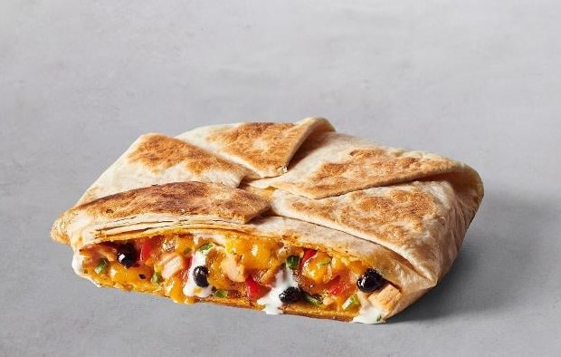
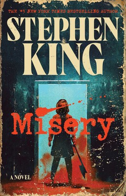
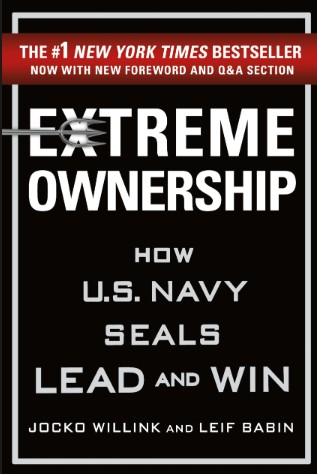
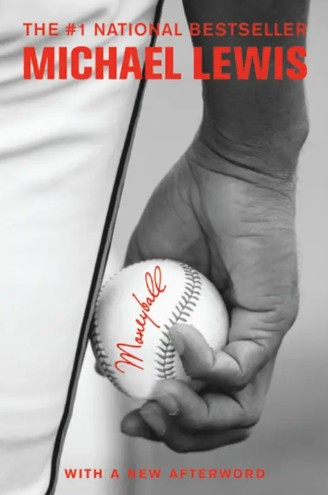
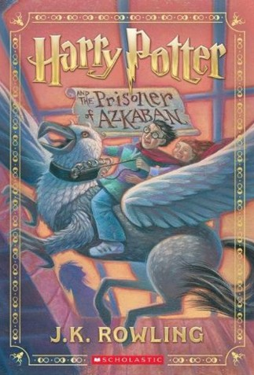

This past April, I visited Honduras for 8 days. This was a very exciting trip as I had never been to Central America before. My girlfriend is from Honduras, so we stayed with her parents in the capital, Tegucigalpa, a majority of the time. On top of exploring the city, we also spent three days at their beach in a remote area of Punta Raton on the western coast of the country. On our last day, we hiked through a national park and repelled 150 feet down a cliff alongside a waterfall. That was probably my favorite thing we did there!
My favorite restaurant is Trattoria Il Panino. Located on Hanover St in the North End, this might be my favorite restaurant in all of Boston. They have great espresso martinis and you HAVE to try the Lobser Ravioli, my favorite dish! You can't go wrong with any of their pasta dishes, most of which come served to you direclty in the pan. The atmosphere and service are both wonderful... I can't recommend this place more!

How about a Hot Take for the ages: Moe's Southwest Grill is the greatest restaurant chain to ever be established! Nothing beats a Stack from Moe's. I always get it with: chicken, black beans, seasoned rice, shredded cheese and obviously queso inside. On top of that, I get a cup of queso on the side for my chips and occasionally to dunk my stack. Lastly, while I'm not usually a big soda guy, you have to get a fountain drink. I've come to perfect the greatest soda combo ever for Dr. Pepper lovers... a 65%:35% ratio of Cherry-Vanilla:Regular Dr. Pepper (you'll thank me later!).
| Book Name | Cover Image | Author | Summary |
|---|---|---|---|
| Misery |  |
Stephen King | This book traps celebrated novelist Paul Sheldon in the snowbound home of Annie Wilkes, the “number one fan” who saved his life—then demands he resurrect the heroine he’s just killed off. Injured, isolated, and at her mercy, Paul must write for his survival as admiration curdles into menace. |
| Extreme Ownership: How U.S. Navy SEALs Lead and Win |  |
Jocko Willink & Leif Babin | This book draws on the authors’ combat leadership in Ramadi, where they led SEAL Team Three’s Task Unit Bruiser through high‑stakes missions. Through vivid battlefield scenes and hard lessons learned, they lay out principles of total accountability that transfer from war zones to boardrooms. |
| Moneyball: The Art of Winning an Unfair Game |  |
Michael Lewis | This book follows Oakland Athletics GM Billy Beane through the 2002 season as he rebuilds his low-budget roster using overlooked statistics to spot undervalued talent. Against baseball orthodoxy, his data-driven gambles turn castoffs into contenders. |
| Harry Potter and the Prisoner of Azkaban |  |
J.K. Rowling | This book begins with an unexpected ride on the Knight Bus, plunging Harry’s third year at Hogwarts into danger. An escaped convict known for allegiance to Voldemort is said to be hunting him, Dementors haunt the grounds, and a mysterious link to Harry’s past begins to surface. |